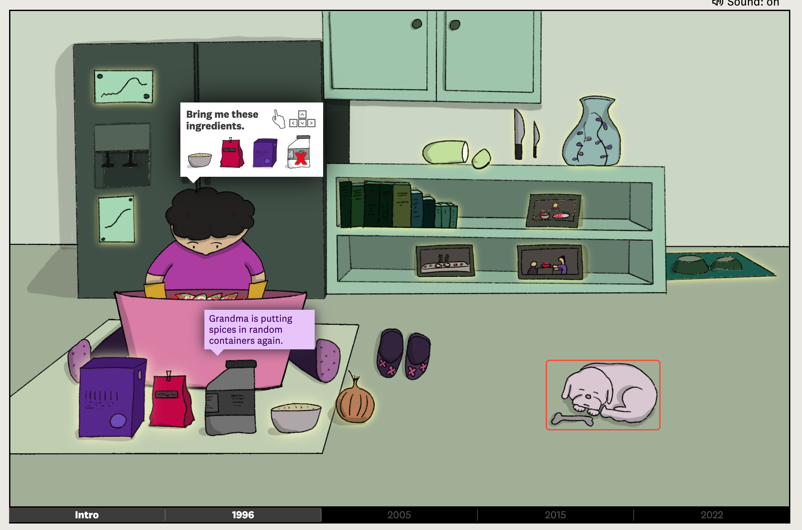
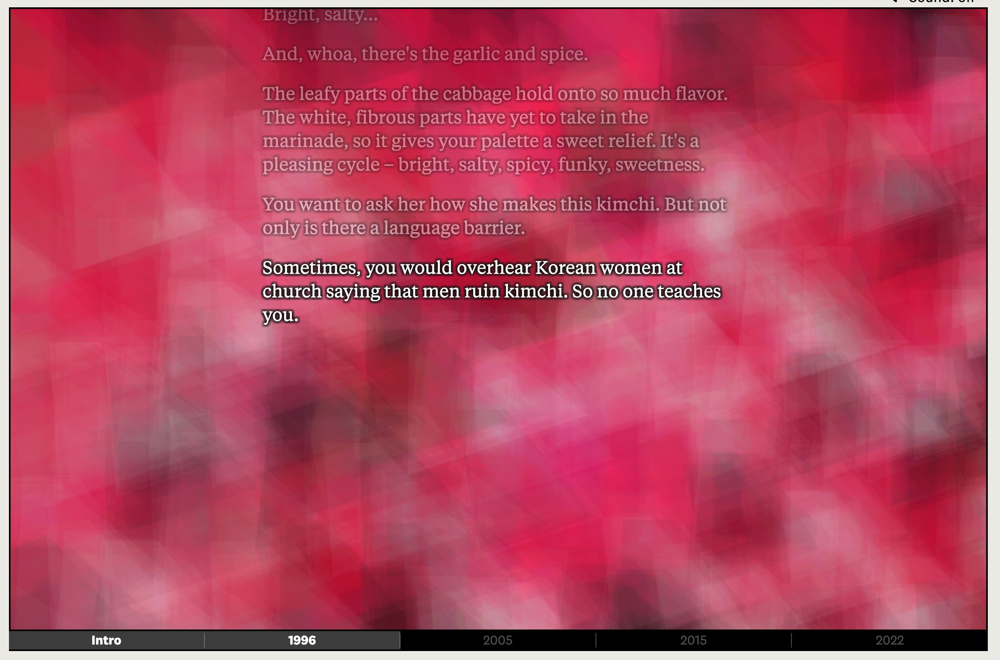
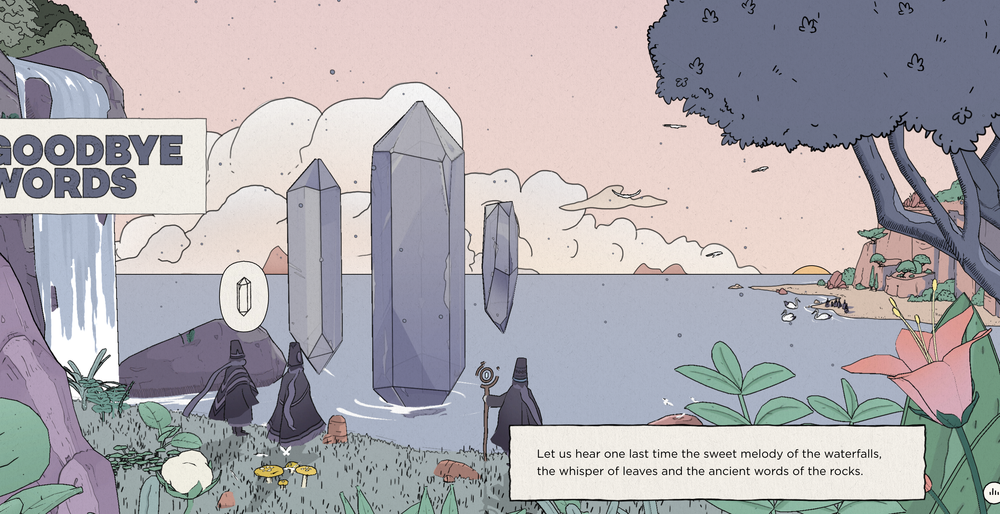

Comparative Analysis


The search for my kimchi
This project is very effective in telling a personal story, the story is told through text that appears as the user clicks on the screen and some interactive scenes that enhance the narrative. The story is very well told and the interactive scenes made it far more engaging, I particularly enjoyed the optional items you could interact with. The only critique I have for this project is the styling, the sounds were a little grating and while I like the childish art style I couldn’t always tell what certain items were.

Make me pulse
This project tells a short story by taking the user through multiple scenes that have small interactions. The story is told via narration and enhanced by relevant interactions. The visual style is very well done with many small animations adding to the atmosphere, the background music also enhances the experience.